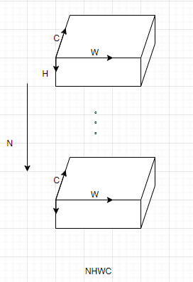
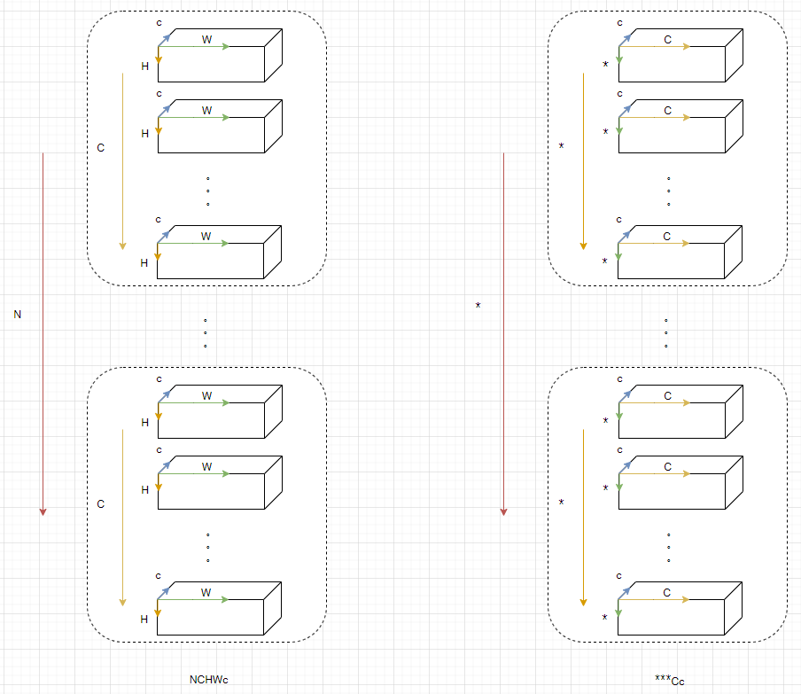
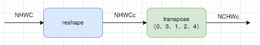
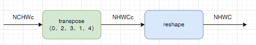

布衣架构排布说明#
神经网络中数据是以张量的形式存在的，CNN网络的一些算子，比如卷积核池化等，给每个维度赋予了含义，即NHWC或者NCHW，但是在Transformer等其他网络的一些算子中，已经很难再找到对每个维度的明确定义了。张量是严格按照其维度来排布的，下图以NHWC为例，描述了框架下数据的排布：

排布的表达#
Icraft XIR用 Layout 来描述数据排布形式， Layout 是对张量形状中每一维的注解，每个维度使用一个字母来表示。比如对于一个四维张量来说， layout=NHWC 说明了它的最后一维表示通道，这对于卷积等算子的实现是必不可少的。
Layout使用单个字符表示的坐标轴来解释张量的每一维是什么意义，目前有效的字符为 NHWDCIO*nhwdcio 。其中大写字母表示没被划分或划分后的Tile数量的坐标轴，小写字母表示做了划分后的单位坐标轴，后面跟数字表示单位长度，*表示不关心的坐标轴。例如 NCHWc32 ， OIHWi32o32 ， N**Cc4 等都是有效的表达。
备注
NHWDCIO分别表示Batch、高度、宽度、深度、通道、输入(通道)、输出(通道)
软件排布和硬件排布#
在Icraft中，软算子在CPU或GPU上计算，输入输出以及参数存储在PSDDR上，其排布方式称为软件排布；硬算子在NPU或PL上计算，输入输出及参数存储在PLDDR上，其排布方式称为硬件排布。
软件排布：对于CNN网络中的算子，Icraft仅支持框架下的NHWC形式的排布；对于非CNN的算子，Icraft支持的排布形式与框架保持一致，描述维***C；
硬件排布：为了满足布衣架构的NPU对数据排布的要求，软件排布需要转为硬件排布： 最里面一个维度C的数据拆分为两个维度，分别表示为Cc，其他维度保持不变。需要说明的是：当张量的数据精度为8bit时，c必须在{1，2，4，8，16，32}中取值；当张量的数据精度为16bit时，c必须在{1，2，4，8，16}中取值。
同时，为了读取数据的便利，我们可以根据需要摆放C维度的位置，而c维度需要固定在最后一维。下图展示了C在不同位置的情况：

软件排布和硬件排布可以根据Layout参数来区分，即如果layout中同时存在C和c，且c为最后一维，表示硬件排布，如果只存在C，且C为最后一维，表示软件排布，其余为非法排布，示例如下：
Layout |
排布类型 |
|---|---|
NCHWc |
硬件排布 |
NHWC |
软件排布 |
NHWcC |
非法排布（c必须在最后一维） |
NHWc |
非法排布（c和C须同时存在） |
**C*c |
硬件排布 |
**c |
非法排布（c和C须同时存在） |
**C*c* |
非法排布（c必须在最后一维） |
排布转换#
软件排布转硬件排布，以NHWC为例，相当于做如下操作

硬件排布转软件排布，以NHWC为例，相当于做如下操作

自定义算子的排布要求#
自定义算子输入的排布，请参考参数layout来获取输入的排布形式，然后获取输入数据，进行前向计算；
自定义算子输出的排布，用户需要关注自定义算子的consumer，如果自定义算子的consumer为布衣架构上的硬算子，则要求自定义算子的输出必须排布为硬件排布，即将tensor最里面一维C拆分C*c，C所在的位置没有特殊要求。如果自定义算子的consumer为软算子，则要求输出排布为软件排布。